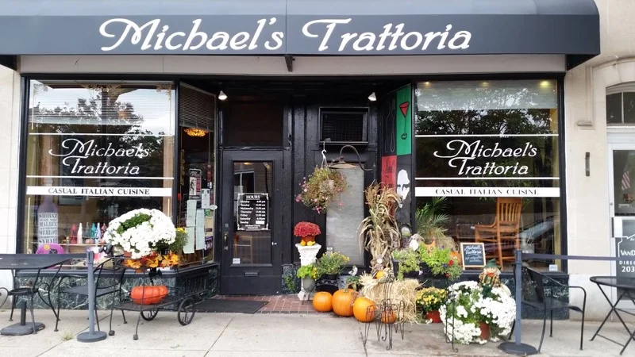
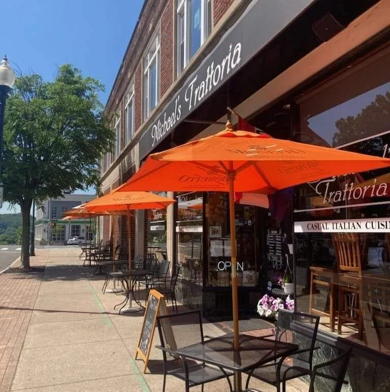
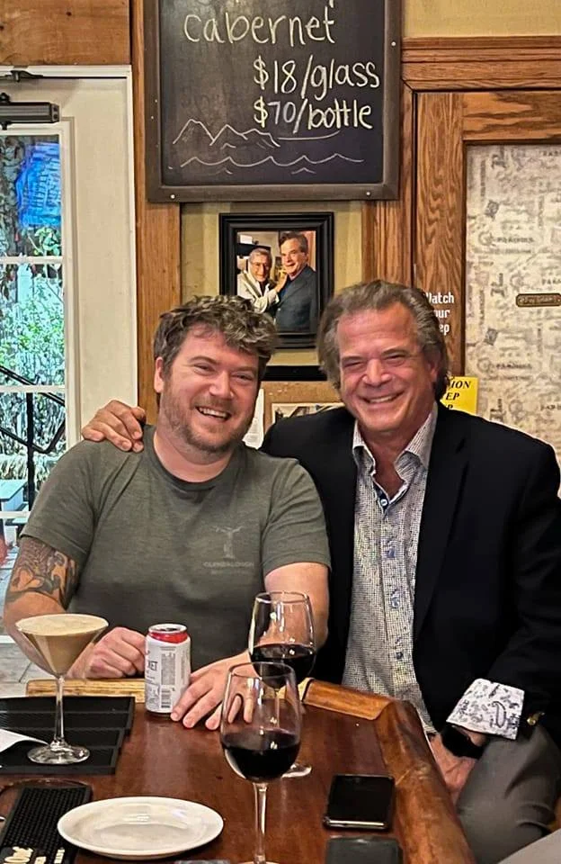

Michael's Trattoria
When Wallingford residents and visitors search for restaurants in Wallingford, CT, Michael's Trattoria consistently stands out. Located at 344 Center Street in the heart of downtown Wallingford, we've been serving authentic Italian cuisine for over 30 years — earning a ZAGAT rating and becoming the restaurant that families, couples, and friends return to again and again.
Founded by Michael Tiscia in 1994, our restaurant reflects a lifetime devoted to Italian cooking. From growing up in his family's restaurant in Stamford to training under a Master Chef, Michael brought decades of culinary passion to Wallingford. That commitment shows in every dish — from handcrafted pastas made fresh daily to premium steaks, fresh seafood, and our legendary Eggplant Parmesan.
What Makes Us Different
Wallingford has many dining options, but Michael's Trattoria offers something you won't find at a chain restaurant or casual eatery. Every sauce is made from scratch. Every pasta dish is crafted to order. Our kitchen uses only the freshest ingredients — never frozen, never pre-made. It's the kind of Italian cooking that Wallingford families have trusted for three decades.
Dinner, Lunch & Everything Between
Whether you're looking for a special dinner out, a quick business lunch, or a place to host a celebration, Michael's Trattoria has you covered. Our dinner menu features classic Italian entrées like Chicken Marsala, Filet Mignon, Lobster Ravioli, and Seared Scallops. Our lunch menu offers lighter options and daily specials at approachable prices. And for a casual night in, our hand-tossed pizzas are a neighborhood favorite.
The Full Wallingford Dining Experience
Our warm, inviting atmosphere features exposed brick walls, vintage artwork, and an intimate bar area — the kind of setting that makes any meal feel special. From date nights to family dinners to catching up with friends over a glass of Italian wine, Michael's Trattoria is where Wallingford gathers.
- ZAGAT rated Italian restaurant
- Serving Wallingford since 1994
- Handcrafted pasta, fresh seafood & premium steaks
- Full bar with curated Italian wine list
- Open for lunch and dinner
- Takeout and DoorDash delivery available
- Four private dining rooms for up to 75 guests
- Free parking in downtown Wallingford
Private Parties & Catering in Wallingford
Planning a celebration? Michael's Trattoria is one of the most popular private party venues in Wallingford, with four private dining rooms accommodating 16 to 75 guests. From birthday parties and anniversaries to corporate events and rehearsal dinners, our dedicated event coordinator handles every detail. We also offer a full catering menu for events at your own venue.
Order Online or Visit Us
Can't dine in? Order delivery through DoorDash or call (203) 269-5303 for takeout. Our full menu is available for pickup — perfect for a restaurant-quality Italian meal at home in Wallingford.
Spring 2026 at Michael's Trattoria
This spring, Wallingford diners are enjoying our seasonal specials featuring fresh, locally inspired ingredients. Join us for lunch on the patio as the weather warms up, or stop in for dinner and try our latest creations. Whether you're celebrating a special occasion, planning a private party in one of our four dining rooms, or simply craving authentic Italian food in Wallingford, Michael's Trattoria is the place. We also serve guests from Meriden, North Haven, Cheshire, Durham, and throughout the greater Wallingford area.
Ready to experience Wallingford's favorite Italian restaurant? View our menus, make a reservation, or just stop by. We look forward to welcoming you.
View Our Menu



